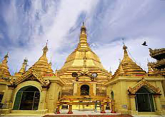

မြန်မာနိုင်ငံ၊ (အင်္ဂလိပ်: Myanmar သို့မဟုတ် "Burma" (ဘားမား)) တရားဝင်အားဖြင့် ပြည်ထောင်စု သမ္မတ မြန်မာ နိုင်ငံတော် (Republic of the Union of Myanmar) သည် အရှေ့တောင်အာရှရှိ နိုင်ငံတစ်နိုင်ငံဖြစ်သည်။ အရှေ့တောင်
အာရှ ကျွန်းဆွယ်ဒေသတွင် အကြီးဆုံးနိုင်ငံဖြစ်ပြီး ၂၀၁၈ ခုနှစ်အရ လူဦးရေ ၅၄ သန်းခန့်ရှိသည်။ ဘင်္ဂလားဒေ့ရှ်၊ အိန္ဒိယ၊ တရုတ်ပြည်သူ့သမ္မတနိုင်ငံ၊ လာအို၊ ထိုင်းနိုင်ငံ၊ ကပ္ပလီ ပင်လယ် နှင့် ဘင်္ဂလားပင်လယ်အော်တို့နှင့် ထိစပ်နေသည်။ မြန်မာနိုင်ငံ၏
မြို့တော်မှာ နေပြည်တော်ဖြစ်ပြီး အကြီးဆုံး မြို့မှာ ရန်ကုန်ဖြစ်သည်။ see more...

ရန်ကုန်မြို့သည် မြန်မာနိုင်ငံ၏ ယခင်က မြို့တော်ဖြစ်ပြီး ရန်ကုန်တိုင်း၏ မြို့တော် လည်းဖြစ်သည်။ ၂၀၀၆ခုနှစ်၊ မတ်လမှစတင်၍ စစ်အစိုးရသည် နေပြည်တော်ကို မြို့တော် ဟု တရားဝင် ပြောင်းလဲသတ်မှတ်ခဲ့သော်လည်း၊ လူဦးရေ ၇သန်း ကျော်ရှိသော
ရန်ကုန်မြို့သည် မြန်မာနိုင်ငံ၏ အကြီးမား ဆုံး မြို့တော် နှင့် အရေးအကြီးဆုံးသော ကူးသန်းရောင်းဝယ် ရေး အချက်အချာအဖြစ် တည်ရှိနေသည်။ ရန်ကုန်မြို့၏ အခြေခံအဆောက်အဦး သည် အရှေ့တောင်အာရှရှိ အခြား သော အရေးပါသည့် မြို့တော်များနှင့် နှိုင်းယှဉ်ပါက ဖွံ့ဖြိုးမှု
မရှိပါ။ ယနေ့ခေတ်တွင် ရန်ကုန်မြို့သည် အရှေ့တောင်အာရှ တွင် ကိုလိုနီခေတ်မှ အဆောက်အဦး အများဆုံး ကျန်ရှိသည့် မြို့ ဖြစ်သည်။ see more...

ပုဂံ (ခေါ်) တမ္ပဒီပ သည် မြန်မာနိုင်ငံ၏ ပထမဆုံး ဧကရာဇ်နိုင်ငံ တည်ထောင်ရာ မြို့တော်ဟူ၍ မြန်မာတို့အတွက် အမျိုးသားရေး လက္ခဏာတစ်ရပ်အနေဖြင့် လည်းကောင်း၊ များပြား လှသည့် ရှေးဟောင်းလက်ရာ စေတီပုထိုးများကြောင့် လည်းကောင်း၊
ကမ္ဘာလှည့်ခရီးသည်တို့ကို ဆွဲဆောင်ရာနေရာ အဖြစ်လည်းကောင်း ကမ္ဘာကျော်သည့် နေရာတစ်နေရာဖြစ် သည်။ ၂၀၁၉ ခုနှစ်၊ ဇူလိုင်လ ၆ ရက်နေ့တွင် ပုဂံရှေးဟောင်း ယဉ်ကျေးမှုဒေသတစ်ခုလုံးကို ယူနက်စကို ကမ္ဘာ့အမွေအနှစ် နေရာအဖြစ် သတ်မှတ်ခဲ့သည်။ များသောအားဖြင့်
ပျူဂါမမှ ပုဂါမ၊ ပုဂါမ်မှ ပုဂံဖြစ်လာခဲ့သည်ဟု ဖော်ပြလေ့ရှိကြသည်။ see more ...